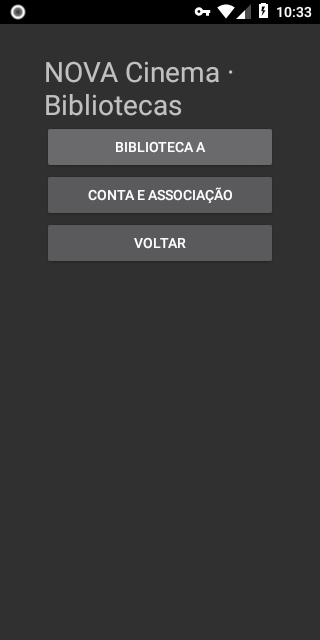
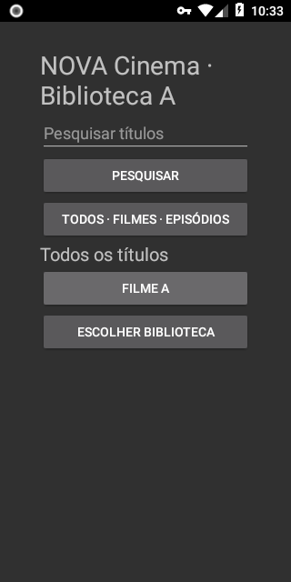
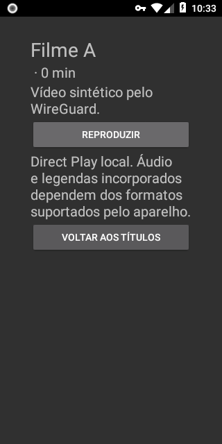
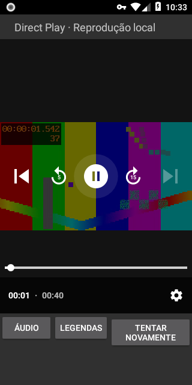
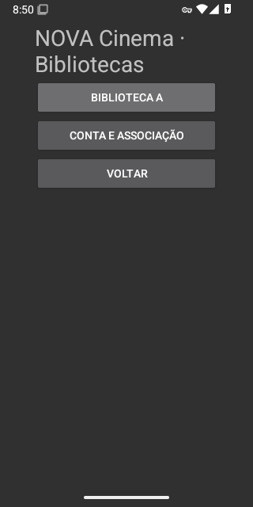
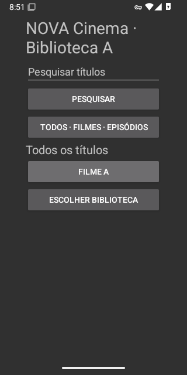
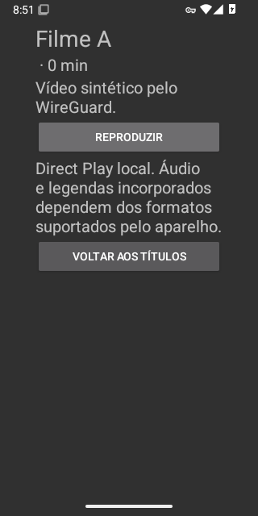
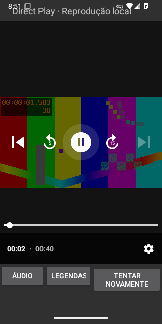

NOVA Cinema · WireGuard nativo
Capturas reais dos testes em emuladores Android API 26 e 35. Catálogo, primeiro frame, avanço, pausa e retoma passaram pelo túnel. Conteúdo sintético; interface funcional provisória, ainda sem design final de TV.
O texto “local” ainda presente no detalhe/player descreve o percurso Direct Play antigo e será revisto. Estas capturas pertencem ao ensaio remoto documentado. Não são fotografias de uma Xiaomi/Chromecast nem testes de HDR ou desempenho.
Proveniência e hashes · Execução de testes

Android API 26 · Bibliotecas autorizadas
Android API 26 · Catálogo
Android API 26 · Detalhe do vídeo
Android API 26 · Reprodução pelo WireGuard
Android API 35 · Bibliotecas autorizadas
Android API 35 · Catálogo
Android API 35 · Detalhe do vídeo
Android API 35 · Reprodução pelo WireGuard